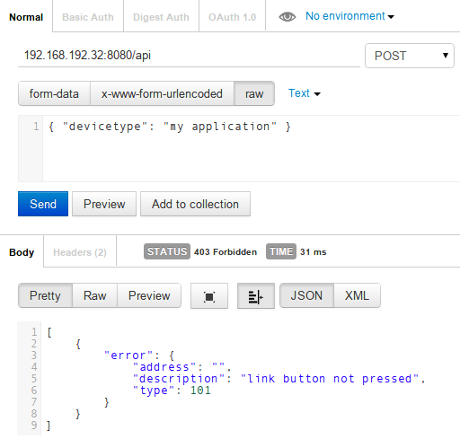
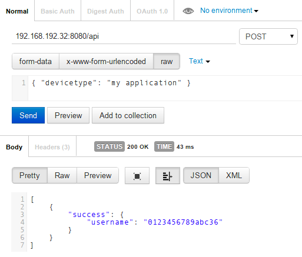
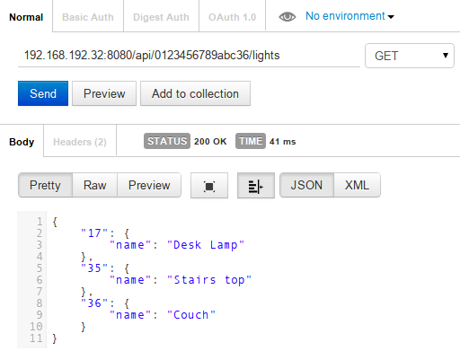
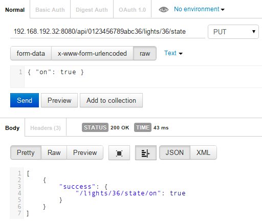
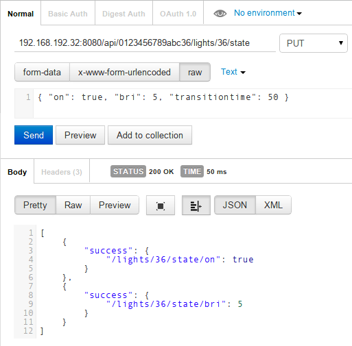

Getting started ¶
This section describes the first steps needed in order to use the API. If you are new to REST APIs please read the About REST section first.
REST-API client¶
The only tool needed in this section is a browser with a REST-API client add-on to access the API. This document doesn’t cover the API access through a programming language since everybody may have its favorite language.
There are various free clients available; please pick one for your favourite browser in the browser add-on section.
In the following steps Postman for Chrome from the Google Webstore will be used. For Firefox the REST Client is another popular client.
Find your gateway¶
As first step the gateway IP address and port must be found.
This could be achieved by doing a GET request to https://phoscon.de/discover.

The response body shows that the gateway has the IP address 192.168.192.32 and the API is reachable through port 8080.
Hint
If the above request doesn’t work, there are several other ways to find the gateway IP address as described in Discovery.
Acquire an API key¶
Any client that wants to access the API must provide a valid API key otherwise the access will fail.
To acquire an API key send a POST request to /api as follows. Use the IP address and the port of your gateway that you got during discovery.
Important
The request must contain a JSON object with the required field devicetype.
In some Rest clients it is mandatory to put ‘http://’ in front of the IP address of the gateway.

… something went wrong!
The returned HTTP status is 403 Forbidden. The response body provides further information about the raised error in the JSON object.
Unlock the gateway¶
The reason why the request failed is that the gateway was not unlocked. This mechanism is needed to prevent anybody from access to the gateway without being permitted to do so.
As described in the section Authorization unlock the gateway as follows:
- In a new browser tab open the Phoscon App
- Click on Menu → Settings → Gateway
- Click on “Advanced” button
- Click on the “Authenticate app” button
See: Phoscon App — Advanced Gateway Settings
Now the gateway is unlocked for 60 seconds.
Second attempt¶
Within 60 seconds after unlocking the gateway, go back to the REST client and repeat the acquire API key request as before. (just click on Send again)

This time the request succeded with HTTP status 200 OK.
In the response body the new API key is in the field username. From now on this API key will be used in further API requests.
Get a list of all lights¶
With the API key from the last section it is now possible to access the full API.
To get a list of all available lights run a GET request to /api/<apikey>/lights as follows.

In the response 3 lights where returned. There are serval things to note here.
- The response contains not a list like
[ ]of lights but a object{ }with key/value pairs - Each light can be accessed by its id
"17" - The light id is a key in the response object and the related value is a further object
Note
Ids are strings and even if they contain numbers never expect them to be “1”, “2”, “3”, … if the user removes light “2” the list will become “1”, “3”.
Get the details of a light¶
To get the detail of a light do a GET request to /api/<apikey>/lights/<id> as follows.

Turn light on/off¶
To turn a light on/off do a PUT request to /api/<apikey>/lights/<id>/state as follows.

In the request body set the on value to true or false to turn the light on and off.
Dim the light with transition time¶
Dimming is done the same way as sending on/off by using the bri parameter; additionally specify a transition time in 1/10 seconds.
The following example dims the light in 5 seconds down.

What’s next¶
To do some more advanced things with this API please refer to the API Endpoints documentation on the left side menu.